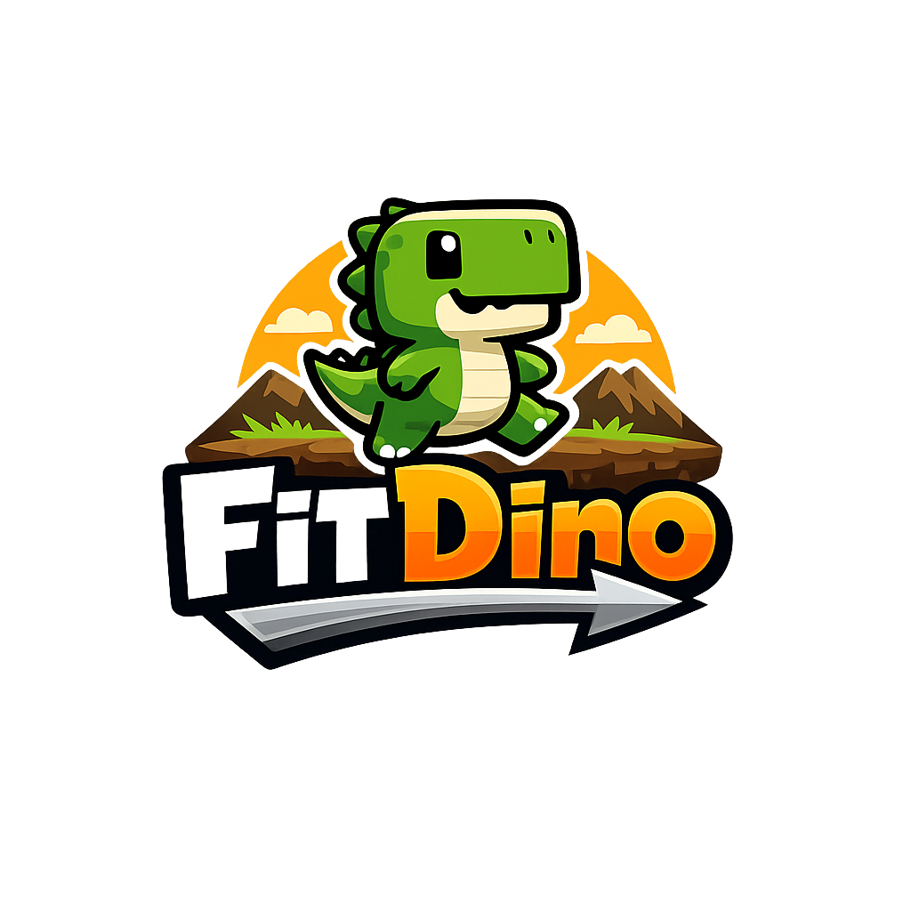

Kung-Fu Teknős kihívása
FitDino a tatamin oldalnézetben áll szemben a taktikás teknőssel. A játék működő külön oldal: mozogni, blokkolni és jó ütemben támadni lehet.

FitDino a tatamin oldalnézetben áll szemben a taktikás teknőssel. A játék működő külön oldal: mozogni, blokkolni és jó ütemben támadni lehet.